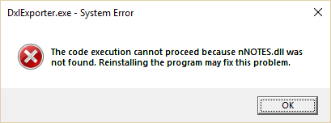

設定
Teamstudio Usage を最初に使用する際に Configuration ウィザード を実行する必要があります。これは File メニューの Configuration からいつでも再実行できます。
Configuration の設定
Notes プログラム Folder
Teamstudio Usage は CatScan という補助プログラムを使用して Domino サーバーからカタログ情報と使用状況情報を読み取ります。ここで指定したフォルダは CatScan 実行前にパスに追加されます。以下のようなサーバースキャン時にエラーが表示される場合、このフォルダ設定が正しくない可能性があります。

通常は自動設定されますが、例えば複数の Notes バージョンをインストールしている場合などには変更が必要な場合があります。
Notes INI のロケーション
CatScan を実行するためには notes.ini の場所も必要です。通常は自動設定されますが、必要に応じて変更できます。
Note
ここでは notes.ini ファイルのフルパス（ファイル名含む）を指定してください。フォルダのみを指定しないでください。
Notes ID ファイル
サーバーをスキャンする際に使用する Notes ID ファイルのフルパス。(例: C:\Notes\Data\User.id)
パスワード
上記 Notes ID のパスワード。パスワードは暗号化して保存されますが、スキャン時には CatScan プログラムに 平文で渡されます。パスワードを保存したくない場合は空欄にして、Usage 実行時に Notes クライアントを起動しておきます。加えて Notes クライアントで以下の設定をする必要があります。メニューの ファイル|セキュリティ|ユーザーセキュリティ... から 他の Notes ベースのプリグラムでパスワードプロンプトを表示しない (セキュリティが低下) にチェックを入れておく必要があります。
Domino サーバー
Teamstudio Usage がカタログおよび使用状況情報をスキャンするサーバーの一覧です。
- 新規のサーバーをリストに追加するにはサーバー名を入力し、「Add」ボタンを押します。入力するサーバー名は以下のどの形式にも対応しています: canonical、abbreviated、または共通名。ただし、Usage 内では 常に canonical 形式が使用されます。
- リストからサーバーを削除するには、該当のサーバーを選択して「Remove」ボタンを押します。
Note
リストからサーバーを削除した場合 Usage は次回以降のスキャンからそのサーバーを除外します。しかしながら、これまで収集した過去の情報は保持し続けます。Teamstudio Usage ではカタログあるいは使用状況のいかなるデータを削除することはありません。
利用可能なサーバーの一覧から選択するには、サーバー名フィールドの右端にある下向き矢印をクリックし、ドロップダウンメニューから <Scan> を選択します。これにより、ローカルクライアントおよびホームメールサーバーのアドレス帳に登録されている既知のサーバーの一覧がドロップダウンに表示されます。なお、利用可能なサーバーのスキャン機能は、事前の Notes 設定が正しく構成されていることを前提としています。そのため、例えば Notes プログラムフォルダーが正しく設定されていない場合などには、エラーが表示されることがあります。
スキャン可能なサーバー数にハードコードされた上限はありませんが、大規模で利用が活発な環境では、使用状況統計の再計算に要する時間が大きくなる場合があります。詳細については パフォーマンス を参照してください。
スケジュール
log.nsf に保存される他の情報と同様に、アクティビティログは短期間の保持期間後に削除されます。デフォルトでは、この保持期間は 2 週間です。Usage がアクティビティデータを取りこぼさないようにするため、Usage のスキャンは定期的に実行することを推奨します。データが Usage に取り込まれた後は、恒久的に保持されます。この運用を容易にするため、Teamstudio Usage は Windows Task Scheduler を利用して定期的なスキャンを実行できます。このオプションを使用すると、任意の時刻に毎日スキャンを実行するスケジュールを設定できます。多くの場合はこれで十分ですが、より複雑なスケジュールが必要な場合は、Windows Task Scheduler でタスクを直接編集することも可能です。
Note
このタスクは Task Scheduler Library の Teamstudio\Usage フォルダー内に登録されます。すべての環境でサポートされているわけではないため、コンピューターをスリープ状態から復帰させる設定にはなっていませんが、実行されなかったスキャンを後から実行（catch-up）する設定になっています。そのため、スケジュールされた時刻にコンピューターがスリープ状態であっても、日常的にコンピューターを使用していればスキャンは実行されます。
Note
コンピューター上で別のスケジュール管理システムを使用している場合は、コマンド Usage.exe --scan を実行するように設定する必要があります。標準インストールの場合、Usage.exe は C:\Program Files\Teamstudio\Usage にインストールされます。また、スケジュールスキャンと Usage UI の実行では同じユーザー資格情報を使用することが重要です。設定情報およびデータは、ユーザーの AppData\Local\Teamstudio\Usage フォルダーに保存されるためです。